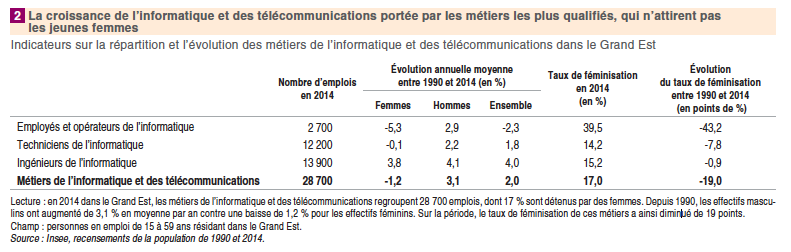

Au commencement de ce qu'on appelle aujourd'hui " l'informatique ", des femmes ont joué un rôle essentiel comme Grace Hooper qui inventa le langage COBOL et la notion de compilateur ou Mary Keller qui soutint la première thèse en informatique en 1965. Ces pionnières du digital furent à l'origine des innovations qui ont révolutionné le monde. Mais comment peut-on alors expliquer qu'il y ait si peu de femmes aujourd'hui dans ce secteur ?
Les chiffres sont pourtant inquiétants :
Alors que le secteur se développe de manière exponentielle, le nombre de femmes présentes dans les métiers de l'informatique et des télécommunications ne suit pas cette tendance et l'écart se creuse de plus en plus. Le taux de féminisation, soit la part des emplois occupés par des femmes sur le total des emplois, a reculé de 43 points entre 1990 et 2014. La sonnette d'alarme a été tirée plusieurs fois et de nombreuses initiatives ont été crées pour inciter les femmes à se diriger dans ces filières et fonder une communauté. On peut citer par exemple : Girls in Tech et femmes@numérique qui mènent de nombreuses actions de sensibilisation en écoles ou en entreprises pour réduire les inégalités des genres, ou encore Les Hackeuses un collectif qui encourage les femmes désireuses de prendre leur place dans l'écosystème de la blockchain et des cryptomonnaies, Girls who code qui enseigne l'informatique aux lycéennes, et la liste est encore longue.
Dans le Ted Talk de Reshma Saujani, fondatrice de Girls in Tech, cette dernière explique que dans notre société les femmes apprennent à être parfaites à ne pas commettre d'erreurs, quant aux hommes ont leur enseigne le goût du risque de l'entrepreneu riat. Elle remarquait avec ses élèves, que les filles avaient tendance à montrer une page blanche plutôt qu'un code imparfait quand les hommes eux n'hésitaient pas à montrer un travail inachevé. La discipline informatique est une discipline riche car elle permet d'apprendre à se tromper, échouer plusieurs fois pour arriver à un code fonctionnel, puis ensuite à le perfectionner, le nettoyer. C'est bien cette barrière qui est essentielle, et l'enseignement du code au lycée ou collège permettrait également d'enseigner cette valeur essentielle de l'entrepreneuriat et de toute réussite : apprendre de ses erreurs, se tromper c'est avancer.
Comme le note le collectif femmes@numérique : " Promouvoir la mixité dans la conception et le développement de nouveaux services numériques permettrait d'étendre et de mieux adapter les usages. D'utilisatrices, les femmes doivent se positionner en tant qu'actrices et ainsi nourrir la créativité du secteur numérique ". L'informatique façonne le monde demain et il serait problématique que ce dernier ne soit construit que par des hommes. Il faut dé-sacraliser la programmation et l'ingénierie, et les rendre accessible au plus grand nombre.
https://www.lemonde.fr/economie/article/2019/03/03/metiers-du-mumerique-l-exode-des-femmes_5430824_3234.html
https://www.insee.fr/fr/statistiques/3281466
https://blogrecherche.wp.imt.fr/2018/03/08/femmes-dans-les-metiers-du-numerique/
http://www.epi.asso.fr/revue/articles/a1904b.htm
https://code.likeagirl.io/why-women-need-to-learn-to-embrace-failure-4ee9bdcb37dc"
https://www.lepoint.fr/technologie/numerique-l-urgence-de-la-parite-23-02-2019-2295738_58.php